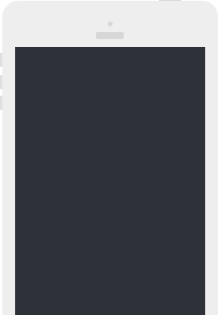

-

01 / Cadastro
Primeiro você cadastra o número do celular do paciente ou do parente em nosso site
-
02 / Escolha um programa
Escolha um de nossos programas pré formatados ou personalize, e deixe do seu jeito
-
03 / Inicie o programa
Inicie o programa, e o nosso sistema irá interagir com seus pacientes. Se houver algo de errado, você será notificado automaticamente
Comunicação simplificada
Mantenhas-se conectado com todos os seus pacientes simultaneamente através de nossa plataforma de integração por SMS totalmente automatizada.
Disponibilidade
Libera tempo do médico e do administrador, hoje gasto para responder à ligações telefônicas de pacientes e parentes permitindo um acompanhamento constante do estado do paciente, com o envio de lembretes edicas ou confirmações.
Agilidade
Agiliza e melhora a saúde dos pacientes ao antecipar problemas ou tendências, com o acompanhamento por ligações telefônicas convencionais ou consultas físicas.
Com você
Proporciona aos pacientes a sensação de constante atenção que eles requerem nesses casos específicos. É como se o médico estivesse "sempre presente“.
Maior Retorno
Garante que os pacientes retornem para suas consultas agendadas, e que eles lembrem-se da importância de programar as consultas necessárias sem deixar passar muito tempo entre uma e outra.

Uma frase sobre o uso do site, e as conversas telefônicas acima e preparacao para os fatos
Números do sistema
35
SMSs enviados
Muitas pessoas estão se beneficiando do Médico com Você
55
Diagnósticos
X pessoas foram diagnosticadas previamente.
73
Aumento no faturamento
X médicos aumentaram seu faturamento com a nossa ajuda
94
Novos clientes
X médicos aumentaram a quantidade de clientes
Disponibilidade
Libera tempo do médico e do administrador, hoje gasto para responder à ligações telefônicas de pacientes e parentes permitindo um acompanhamento constante do estado do paciente, com o envio de lembretes edicas ou confirmações.
Agilidade
Agiliza e melhora a saúde dos pacientes ao antecipar problemas ou tendências, com o acompanhamento por ligações telefônicas convencionais ou consultas físicas.
Com você
Proporciona aos pacientes a sensação de constante atenção que eles requerem nesses casos específicos. É como se o médico estivesse "sempre presente“.
Maior Retorno
Garante que os pacientes retornem para suas consultas agendadas, e que eles lembrem-se da importância de programar as consultas necessárias sem deixar passar muito tempo entre uma e outra.
Torne-se um profissional diferenciado agora mesmo. Clique aqui para comprar